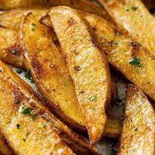

Potato Wedges

Description
This is a fast and easy recipe for potato wedges, Enjoy!
- 6 good sized potatoes peeled
- Half cup of olive oil
- Tablespoon of salt, pepper
- Dash of garlic poweder
- Preheat over to 450 degrees
- cut potatoes into wedges and pat dry with paper towel
device-width
- mix oil and garlic, salt and peper in a bowl
- Toss potatoes in mixture and place on parchment paper
- Cook for 55 minutes